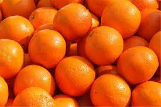
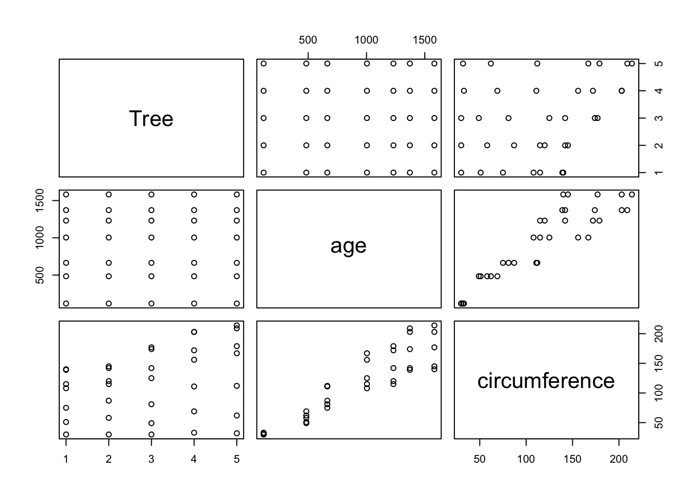

Arancette_quarto
Primo capitolo
L’immagine Figura 1 è di arancette

Secondo capitolo

In Figura 2 c’è un grafico
Terzo capitolo
Una tabella di esempio
| Tree | age | circumference |
|---|---|---|
| 1 | 118 | 30 |
| 1 | 484 | 58 |
| 1 | 664 | 87 |
| 1 | 1004 | 115 |
| 1 | 1231 | 120 |
| 1 | 1372 | 142 |
Quarto capitolo
Testo nella prima colonna
Testo nella seconda colonna
Testo nella terza colonna
Quinto capitolo
L’immagine Figura 3 è di arancette

Primo tabset con una tabella contenente il dataset
Terzo tabset con il grafico dei dati
Sesto capitolo
Prima colonna più stretta della seconda
Colonna più larga